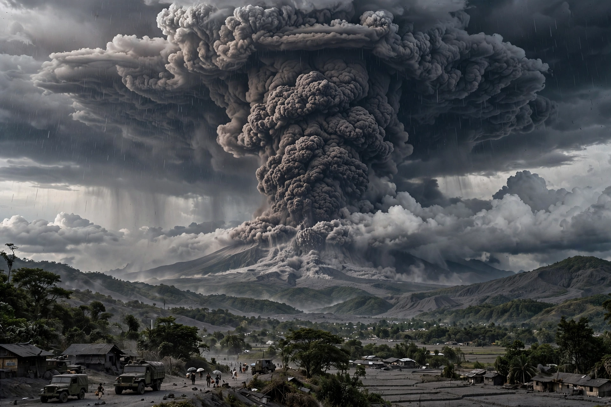

Geoengineering

Geoengineering (or climate engineering) is the deliberate, large-scale intervention in Earth's climate system to counteract {L('Climate_change')}. Proposals divide into two families: removing carbon dioxide from the atmosphere, and reflecting a small fraction of sunlight back to space (solar radiation modification).
Geoengineering is deeply controversial: it might reduce some harms of warming, but it carries its own risks and governance dilemmas, and it does nothing for {L('Ocean_acidification')} or the root problem of rising greenhouse gas concentrations.
Solar radiation modification
The most discussed technique, stratospheric aerosol injection, would loft reflective particles (typically sulphate) into the stratosphere to mimic great volcanic eruptions: the 1991 eruption of Mount Pinatubo cooled the planet by roughly half a degree for a year or two. Marine cloud brightening and cirrus thinning are gentler cousins.
Model studies suggest such methods could cool the planet quickly and cheaply in direct costs, but with uneven regional effects on rainfall; risks include ozone damage, and 'termination shock' — rapid warming if deployment stopped while CO₂ remained high. No outdoor deployment exists; small experiments have repeatedly been cancelled or delayed amid public and scientific dispute.
Carbon removal and governance
Carbon dioxide removal shades into Climate mitigation: afforestation, bioenergy with carbon capture, enhanced weathering and direct air capture are all counted there too when used to offset emissions; 'geoengineering' is usually reserved for the solar methods and the largest-scale removal schemes.
There is no agreed international governance for solar geoengineering. National science academies generally recommend research under oversight; environmental groups are split between opposition and reluctant study; and the prospect of unilateral deployment by one country (or billionaire) is a recurring security concern.
See also: Climate change · Climate mitigation · Volcano · Greenhouse effect · Ocean acidification